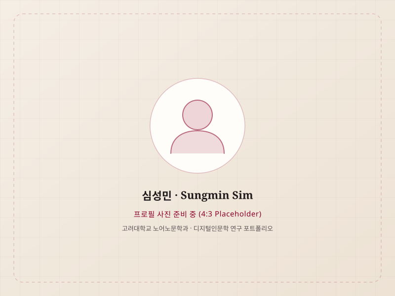

Q01
최근 2개년 석탑대동제의 무대 공연에는 어떤 종류의 연예인들이 섭외되었는가?
고려대학교 노어노문학과 · 디지털인문학 포트폴리오
인문학적 질문에서 출발해 문화 현장의 흩어진 기록을 구조화하고, 지식그래프와 웹 시각화를 통해 맥락과 변화의 흐름을 읽어냅니다. 노어노문학 전공 기반 위에 인문학 콘텐츠와 문화 데이터 분석을 탐구하고 있습니다.

연도별 축제 책자와 공개 자료에 흩어져 있던 무대 공연 및 부스 운영 기록을 Neo4j 지식그래프로 구축해 참여 주체의 구성과 2개년 변화를 탐색합니다.
About
텍스트와 문화 현상을 데이터 구조로 옮기고, 시각화 및 온톨로지 관점에서 인문학적 해석의 폭을 넓히는 작업을 지향합니다.
Featured Research Project
2025년(KUdyssey)과 2026년(Kulimax) 고려대학교 석탑대동제의 무대 공연과 부스 운영 참여 데이터를 Neo4j 지식그래프로 구조화하고, 연도별·일자별 참여 구성을 탐색할 수 있도록 구축한 디지털인문학 연구 프로젝트입니다.
01 / RESEARCH BACKGROUND
대학 축제는 무대 공연과 학생 자치 활동, 외부 기업 및 기관의 홍보 프로그램이 한 시공간에 교차하며 결합되는 복합 문화 행사입니다. 그러나 축제를 둘러싼 공식 기록은 해마다 제작되는 책자와 SNS 공지, 개별 홍보 게시물 등에 흩어져 있어 연도별 전체 구성을 입체적으로 비교하기 어렵습니다.
본 연구는 이처럼 파편화된 축제 기록을 축제–일자–참여 주체의 관계망으로 구조화함으로써, 단순한 행사 일정 나열을 넘어 참여 주체의 분포와 연도별 성격 변화가 한눈에 드러나는 데이터 기반 탐색 환경을 구축하고자 합니다.
02 / RESEARCH QUESTIONS
최근 2개년 석탑대동제의 무대 공연에는 어떤 종류의 연예인들이 섭외되었는가?
최근 2개년 석탑대동제의 무대 공연에는 어떤 종류의 학생단체들이 참여했는가?
최근 2개년 석탑대동제의 부스에는 어떤 조직이 참여하였으며, 산업군 구성은 어떻게 달라졌는가?
최근 2개년 석탑대동제의 부스에는 어떤 학생참여주체가 참여하였는가?
03 / DATA MODEL
축제와 일자를 중심 축으로 두고, 무대 공연과 부스 운영이라는 두 가지 참여 양상을 5종 노드 클래스와 3종 관계 유형으로 모델링했습니다.
연도별 축제가 포함하는 세부 행사 일자를 연결
해당 일자에 무대 공연을 진행한 참여 주체를 연결
해당 일자에 부스를 운영한 조직 및 학생 주체를 연결
04 / INTERACTIVE KNOWLEDGE GRAPH
Neo4j에서 추출한 전체 원본 데이터를 브라우저 위에서 직접 탐색할 수 있습니다. 클래스·연도·일자 필터와 이름 검색을 조합하고, 노드를 클릭해 원본 속성과 연결 관계를 확인해 보세요.
필터를 적용하면 선택한 조건에 해당하는 참여 주체와 연결된 축제·일자 문맥 노드가 함께 표시됩니다.
선택한 필터 조건에 일치하는 노드가 없습니다.
05 / TIMELINE
모델링과 데이터 구축, Cypher 질의 검증을 마치고 현재 인문학적 해석과 웹 시각화 고도화를 진행하고 있습니다.
축제·일자·참여 주체 간 5종 노드와 3종 관계 스키마 확정
2025 KUdyssey·2026 Kulimax 공식 책자 및 공개 자료 취합
노드 150개·관계 242개 그래프 데이터베이스 적재 완료
4개 핵심 연구 질문을 중심으로 Cypher 탐색 및 정합성 확인
2개년 라인업·학생 참여·산업군 변화에 대한 인문학적 맥락화
정적 웹 환경에서 동작하는 인터랙티브 지식그래프 탐색기 구현
최종 연구 보고서 및 아카이브 결과 발표
06 / ROLE & VERIFICATION
ChatGPT를 활용해 데이터 모델·Cypher 코드·웹페이지 구현을 보조받고, 결과를 원자료 및 Neo4j 실행 결과와 대조하여 검증했습니다. AI가 생성한 내용은 그대로 채택하지 않고, 고유명사·분류·관계 방향과 질의 결과를 직접 확인했습니다.
07 / TOOLS & SOURCES